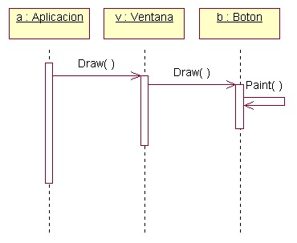
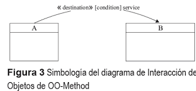
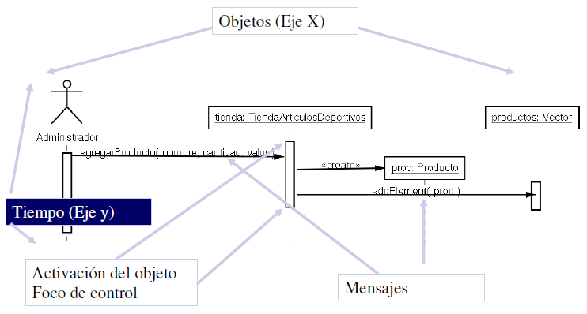
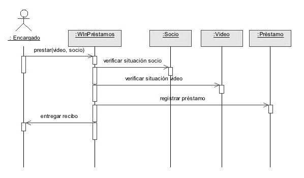

Objetivo general: Diagramas de interacción:
Aprender o ampliar los conocimientos referentes al UML, Microsoft Visio, y algunos conceptos, con el fin de brindar mejores profesionistas y actualizar los avances del software. Los diagramas de interacción ilustran como interaccionan unos objetos con otros. Intercambiando mensajes. (https://es.scribd.com/document/313814081/OBJETIVO-GENERAL-docx, págs. 1-2)
Objetivo específico 1:
Desarrollar por completo el diseño de un proyecto de software con el fin de comprender todo el proceso (https://es.scribd.com/document/313814081/OBJETIVO-GENERAL-docx, págs. 1-2)
Objetivo específico 2:
Mostrar como UML crea un protocolo de comunicación estándar entre los desarrolladores (https://es.scribd.com/document/313814081/OBJETIVO-GENERAL-docx, págs. 1-2)
Objetivo específico 3:
Identificar los distintos tipos de diagramas que existen (https://es.scribd.com/document/313814081/OBJETIVO-GENERAL-docx, págs. 1-2)
